Air pollution, meteorological conditions and respiratory infections in Baix Llobregat. A 14-year spatiotemporal analysis.
The objectives of this research project are:
- David and Marc are studying all data from Gavà that is a city located in Baix Llobregat county.
- Meteorological data are collected from Meteocat XEMA stations.
- Respiratory infection data are collected from the SIVIC surveillance system.
Air Pollutants in Gavà (2004–2025)
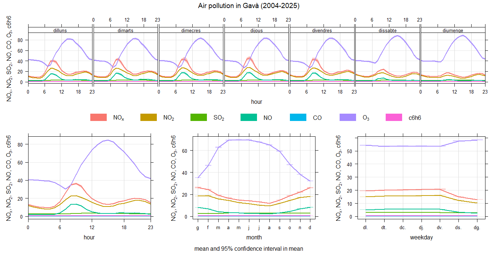
This image shows the time variation of several air pollutants measured in Gavà between 2004 and 2025.
Benzene (C₆H₆) in Gavà
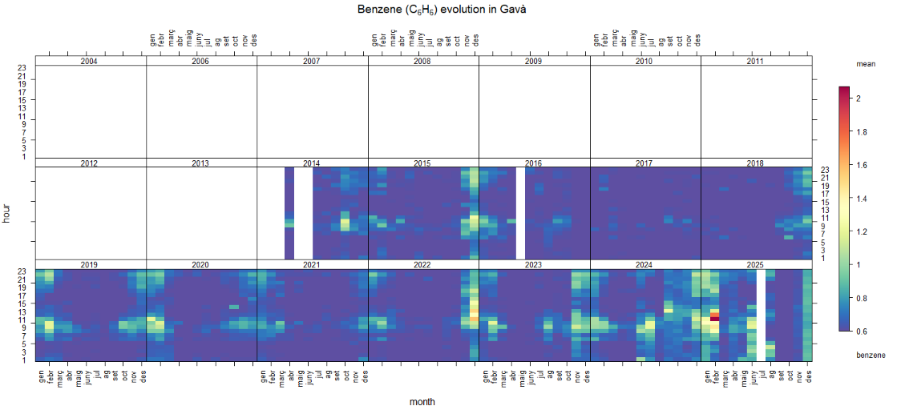
This image shows the evolution of benzene concentrations in Gavà over time.
Carbon Monoxide (CO) in Gavà
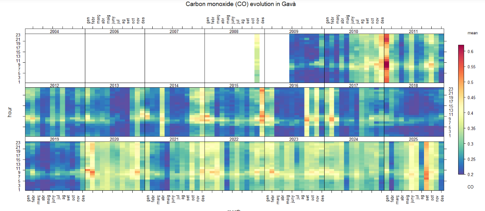
This image shows the evolution of carbon monoxide concentrations in Gavà over time.
Nitric Oxide (NO) in Gavà
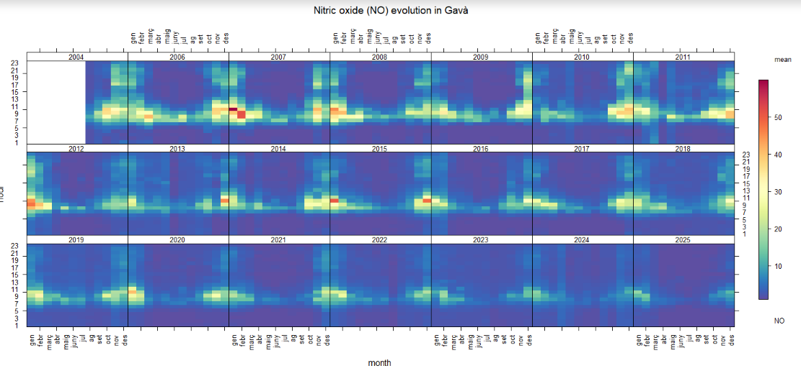
This image shows the evolution of nitric oxide concentrations in Gavà over time.
Nitrogen Dioxide (NO₂) in Gavà
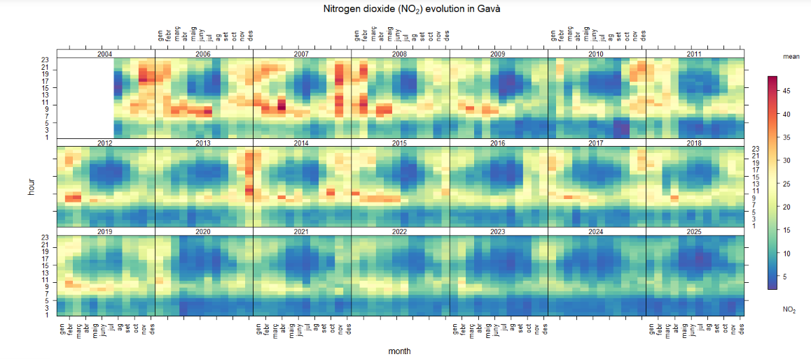
This image shows the evolution of nitrogen dioxide concentrations in Gavà over time.
Nitrogen Oxides (NOx) in Gavà
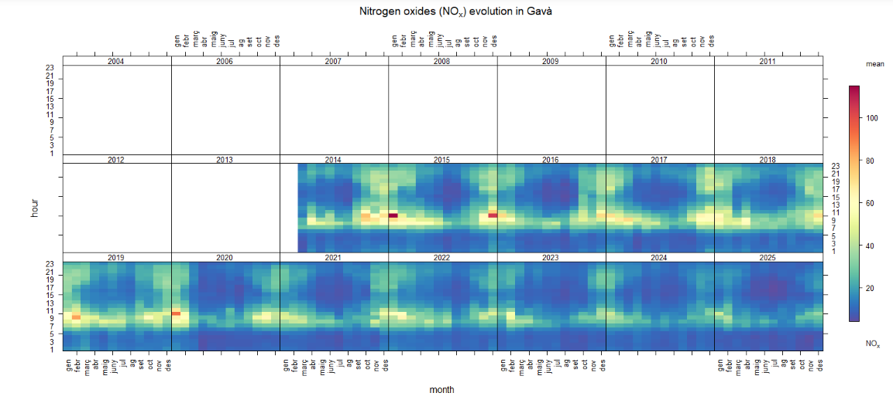
This image shows the evolution of nitrogen oxides concentrations in Gavà over time.
Ozone (O₃) in Gavà
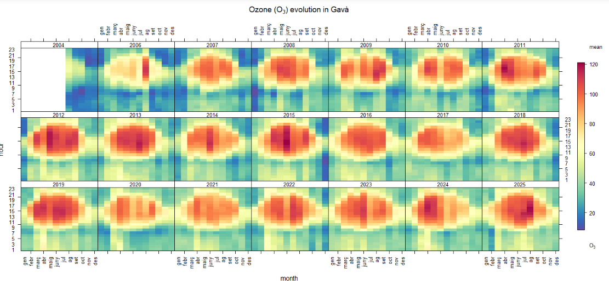
This image shows the evolution of ozone concentrations in Gavà over time.
Sulphur Dioxide (SO₂) in Gavà
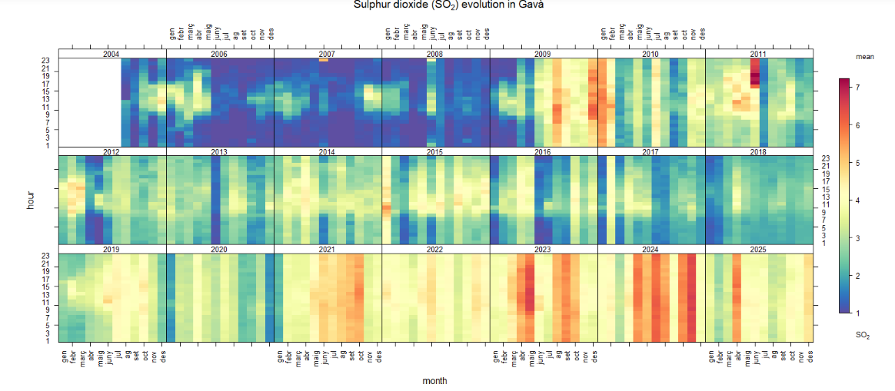
This image shows the evolution of sulphur dioxide concentrations in Gavà over time.
FINAL CONCLUSION
The results of this study show strong temporal relationships between atmospheric pollution, meteorological conditions and respiratory infections in the Baix Llobregat region.
What is the origin of air pollution in Gavà
To know the origin of air pollution in Gavà is easy with RStudio.
We only need columns named ws for wind speed, wd for wind direction and a pollutant variable such as NO₂.
As you can see in the following image, part of Gavà air pollution comes from the metropolitan area.
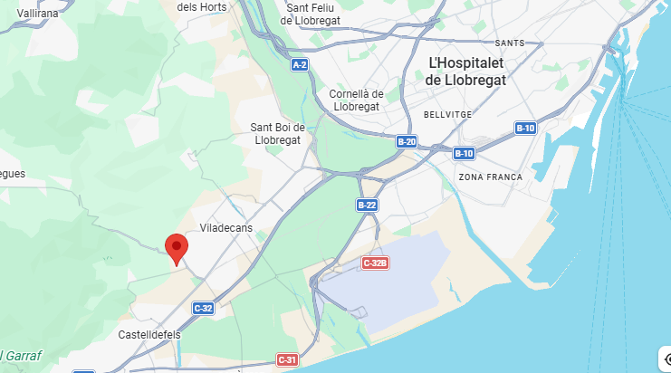
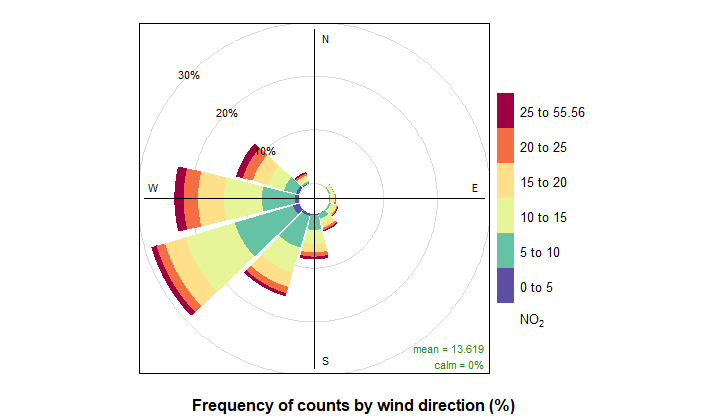
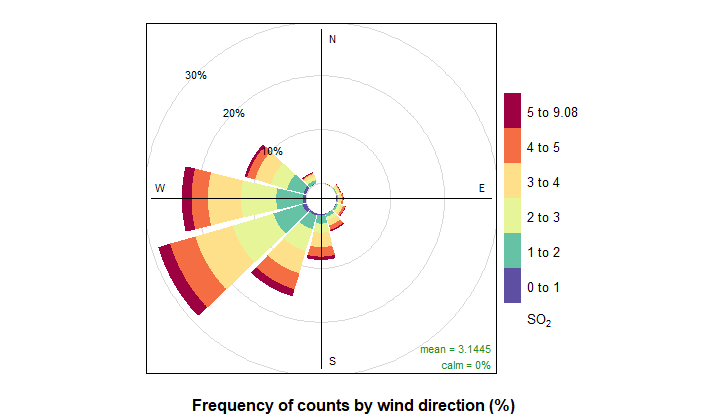
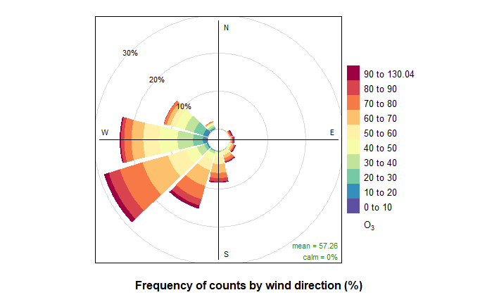
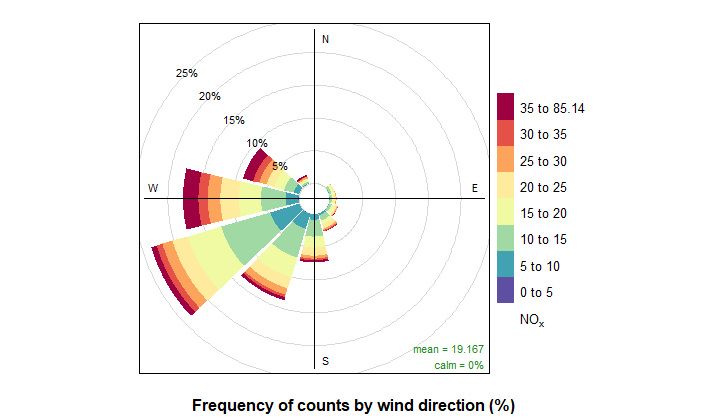